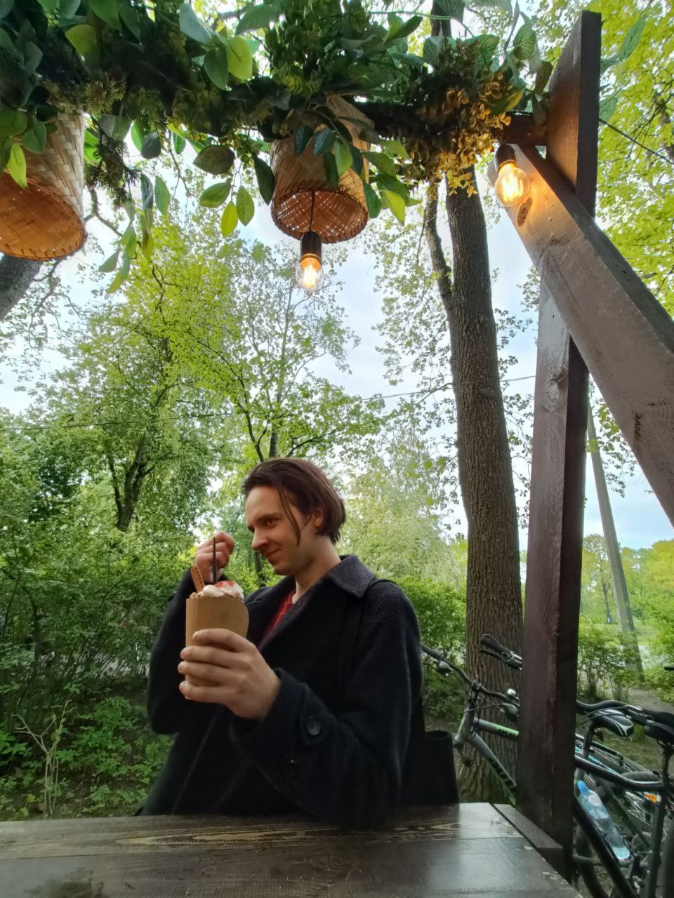

Main info

Name: Valeryy
Cername: Kozhura
Born: 20.06.1998
Motherland: Russia, Nizhnekamsk city
Lives in: Seint-Petersburg
Education: BGTU "VOENMEH"
Steck: HTML/CSS, JS, JAVA, PHP
GitHub: https://github.com/Ivsmcrew
My BIO
I was born in a small town called Nizhnekamsk. I was mostly raised by my beloved mom and dad, sometimes my grandmother. Parents have always been responsible workers at the main enterprise of the city "NKNKH", both have a higher education (father is a technologist, mother is a mechanic), you will only hear good things about them from others. From them I inherited a predisposition to the exact sciences, a desire to study everything (probably that's why in childhood all the cars were dismantled), the desire to ask questions. I spent a lot of time in my childhood in the aircraft and rocket modeling section, I especially liked rockets, This will determine my future path in life. There was room at my early age for self-expression through art and music. I was pretty good at it and at times I thought about getting serious about writing my own music. But in high school, almost all the time was occupied by study. I was good at mathematics, computer science and physics, but the chosen exams were specialized mathematics and physics, having passed them successfully, I entered St. Petersburg at the Voenmekh University with a degree in rocket science. There I met two people who largely determined my future hobbies. Anton and Alexey the main common interests were passion for music and study. We spent a lot of time rehearsing and discussing songs, playing in the streets, this period was at the same time the most carefree and stressful, because it was necessary to choose between music and university. The choice fell on the second although today we occasionally play something. After graduating from university, I completely lost interest in rockets, therefore, having settled down as a design engineer at the first plant that came across, he began to seriously think about programming. So, after a hard and interesting self-study, I got into the company...